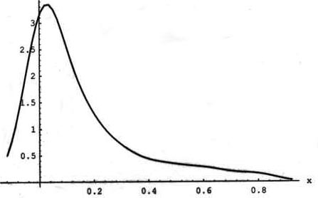
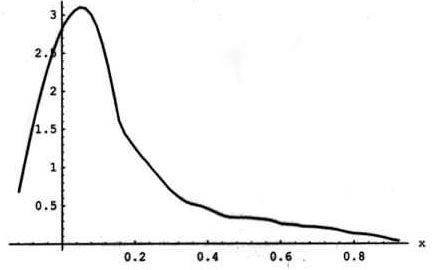
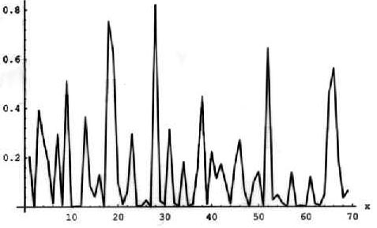

At the timeof this writing (December, 2003), the Liquid Assets® wine tasting group and its affiliates have held 71 tastings The tastings were always "blind" and the statistical analysis was almost invariably carried out using the Winetaster® software. The first tasting by this methodology took place on March 9, 1998. One of the key elements that is measured in these tastings is the Kendall W coefficient of concordance, which, in effect, measures the extent to which the "judges" agree with one another. The coefficient ranges from 0 (no agreement) to 1.0 (perfect agreement).
What does strong agreement among the judges signify? It is tempting to argue that if they all agree, they all have exquisite palates that are able to distinguish between good and bad wines, or between better and worse wines. But unfortunately, this is not necesssarily so. There could, in principle, be complete agreement among the judges, yet they could all have execrable tastebuds and agree that a mixture of various Algerian reds is vastly preferable to Ch. Petrus 1990. It is also possible that lack of disagreement reflects differences in what particular tasters like: people have differential tolerance for various charactertistics of wine such as traces of excess acidity or oxidation or residual sugar or what have you. In what follows, we will assume that this is not the case; i.e., that high degrees of agreement represent an improvement in the groups ability as a whole to discriminate between good, bad, better and worse wines. It should also be noted that the judges over time were not an invariant group: while, with one or two exception, core members predominated in the tastings, frequently occasional guests participated. Ignoring the occasional variation in the composition of the group, the question then is this: has the group improved over time its ability to discern good and bad wines, or in other words, has the Kendall coefficient W shown any tendency to increase over time?
A small amount of reflection will convince one that looking at the value of W is not the right way of going about this. The reason for this is that the number of tasters and the number of wines tasted differ from time to time and the statistical significance of any one W value depends on those two factors. Thus, for example, if 7 wines are being ranked by 7 judges, a value of W=0.4 is statistically significantly different from zero at the .05 level, but this value is not significant if there are if there are only 6 wines. Hence, instead of looking at the value of W, we shall examine the so-called p-value, i.e., the probability the the stated W-value could have occurred by chance.
First of all, we note that of the 69 data-points (two tastings were omitted because they did not conform to the standard procedure),
40 had p-values less than or equal to 0.10 and 32 less than 0.05. This indicates that roughly one half of the tastings produced
statistically significant agreement among the judges. The empirical density function of the p-values was obtained nonparametrically
and is shown in Figures 1 and 2.


Both Figures employ a window width of 0.0687; Figure 1 employs the Gaussian kernel while Figure 2 the Epanechnikov kernel.They both confirm the presence of many observations in the left tail and both densities are highly skewed to the right.
A descriptive view of the behavior of the p-values over time can be obtained from Figure 3, which simply depicts the time series
of p-value observations.

The last analysis undertaken here is a regression analysis in which the p-values are the dependent variable and are regressed on a number of other variables that might explain the resulting p-values. In particular, we hypothesized that the p-values may be affected by a trend variable, i.e., later tastings ought to produce smaller p-values if learning has taken place, by the number of wines in a tasting (more wines should make it more difficult to get agreement), by the number of judges (the presence of more judges might make it more difficult to get agreement), and by a number of dummy variables describing the type of wine tasted. The most general regression equation that was estimated was the following:
where
yi = p-value for the ith tasting
i = a trend variable denoting the tasting
winesi = the number of wines in the ith tasting
judgesi= the number of judges in the ith tasting
bori= 1 if all the wines in the tasting were Bordeaux wines and 0 otherwise
buri= 1 if all the wines were Burgundy wines and 0 otherwise
rhoi= 1 if all the wines were Rhone wines and 0 otherwise
geri= 1 if all the wines were German wines and 0 otherwise
itai= 1 if all the wines were Italian wines and 0 otherwise
spai= 1 if all the wines were Spanish wines and 0 otherwise
amei= 1 if all the wines were American wines and 0 otherwise
ui= denotes the unobserved error term
and the b's are coefficients to be estimated.
Nineteen of the tastings were devoted to Bordeaux wines, 7 to Burgundies, 6 to Rhone wines, 4 to German wines, 3 to Italian wines, 3 to Spanish wines and 11 to American wines. The balance of the tastings were either devoted to some special category of tasting (for example, wines from Provence) or to a mixture of wines from more than one region.
The regression equation shows no statistically significant rresults of any kind. None of the regression coefficients is statistically significantly different from zero, and the overall regression, with an R2 = 0.1191 is not significant either. For what it is worth, we note that b2, b3, b6 and b8 are negative, indicating that later tastings, the number of wines, Rhone wines and Italian wines marginally reduce the p-value,i.e., increase the significance of the agreement.